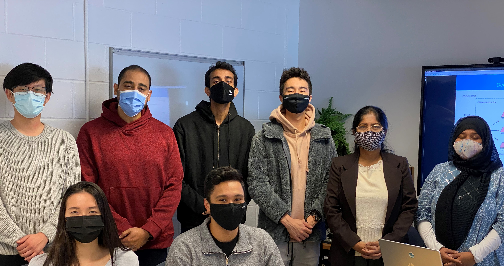

Big-Data Analytics and Management Laboratory (BAM Lab)
Director: Farhana H. Zulkernine
Located at: 633 Goodwin Hall
Queen's University
Kingston, ON, Canada

- In May 2024, 2 BAM Lab students received the Connected Mind graduate funding. Congratulations to Amir Eskandari (PhD) and Jing Tao (MSc) who will be working on assistive conversation robots for the medical-social support.
- In 2023, 12 students graduated from BAM Lab. Congratulations to Sazia Mahfuz (PhD), Donghao Qiao (PhD), Haoran Qi (MSc), Ian Pepin (MSc), Zili Luo (MSc), Austin Carthy (MSc), Ruikang Luo (MSc), Vidhi Kokel (MEng), Calen Irwin (MS), Vignesh Rao (MSc), Sam Baranek (MS)
- April 27, 2023 Queen's Gazette news post on another successful NFRF grant for safe aging
- April 5, 2022 Queen's Gazette news post about our successful NFRF grant in the pandemic context.
- Great success in 2021 in achieving several MITACS Accelerate (with Pfizer Canada, Markitech and Thales Group), and DND funding to continue cutting edge research on medical data analytics, voice assistant system for seniors, autonomous vehicles, and cybersecurity data analytics.
- BAM Lab students won three best paper and best student paper awards (see awards below) in 2021. Congratulations!!!
- Queen’s Bigdata Analytics and Management Lab helps online doctors help their patients | Queen's Partnerships and Innovation (queensu.ca), Dec 2, 2021
- Predicting cancer spread with natural language processing, Predicting cancer spread | Queen's University Gazette (queensu.ca), Nov 2021 and Medical Express
- Designing the medical check-up of the future | Queen's University Gazette (queensu.ca), Oct 28, 2021
- Farhana Zulkernine’s Queen’s lab partners with MarkiTech to measure vital signs remotely, Oct 21, 2021, News, Partnerships and Innovations | Vice-Principal Research.
Awards
Isaac Hogan, Donghao Qiao, Ruikang Luo, Mojtaba Moattari, and Austin Carthy received the best student paper award at IEEE CogMI (Cognitive Machine Intelligence) 2021 for Hogan, I., Qiao, D., Luo, R., Moattari, M., Carthy, A., Zulkernine, F., Rivest, F., Brenton, M., 2021, "FireWarn: Recognizing Fire Hazards Using Computer Vision”.
Jason Lam and Yuhao Chen received the best paper award at MLLD 2021 for Lam, J., Chen, Y., Zulkernine, F, and Dahan, S., 2021. "Detection of Similar Legal Cases on Personal Injury", at the IEEE International Conference on Data Mining workshop on Mining and Learning in the Legal Domain, virtual conference, sponsored by Thomson Reuters.
-
New funding received from Pfizer Canada and Mitacs for the project: Prevalence of Moderate-to-severe Osteoarthritis pain of the hip and knee in Canadian Primary Care: A proof of concept study from the Canadian Primary Care Sentinel Surveillance Network
- Tariq Abughofa
and Ahmed Harbywon the
best paper award
at IEEEBigDataService
2021 for
T. Abughofa, A. Harby, F. Zulkernine, H. Isah, 2021, "Incremental Community Detection in Distributed Dynamic Graph", IEEE International Conference on Big Data Computing Service and Machine Learning Applications (IEEEBigDataService), virtual conference, 2021.
- Yifei Yin won the
best student paper award
at IEEE PICom 2020
for
Y. Yin, F. Zulkernine, S. Dahan, 2020, "Determining Worker Type from Legal Text Data using Machine Learning,” 18th IEEE International Conference on Pervasive Intelligence and Computing (PICom), Calgary, 2020.
- Yinchen Shi won the
best student paper award
at IEEE IEMCON 2020
for
Y. Shi, F. Zulkernine, S. Mahfuz, P. Nicholls, 2020, "An adapter for IBM Streams and Apache Spark to Facilitate Multi-level Data Analytics” IEEE Annual Information Technology, Electronics and Mobile Communication Conference (IEMCON)
{kind=link}
{kind=link}
{kind=link}
{kind=link}
Research Products


-
In collaboration with Markitech and YourDoctorsOnline and funded by Mitacs, BAM lab researchers developed a remote video based biometric data measurement system (incorporated in the Veyetals product).
-
In collaboration with YourDoctorsOnline, BAM lab researchers developed a medical chat summarization technique for their medical advising cloud platform.
-
In collaboration with a startup company, BAM lab researcher (undergraduate) developed an efficient hierarchical image classification algorithm to categorize clothing using camera for online shopping market.
Major Funding
- Markitech-Mitacs funding for project "HiSarah: A Voice Assistant for Seniors".
- Pfizer Canada and Mitacs funding for research on Osteoarthritis.
- IBM CAS, OCE VIP I, and NSERC CRD - Multimodal streaming data analytics, profiling for storage optimization, and cognitive computing for activity recognition
- Markitech, YourDoctorsOnline, and Mitacs - Medical chat analysis and remote biometric data measurement using cell phone video
- CIMVHR, University of Manitoba Department of Family Medicine, and Western University Department of Psychiatry - Predicting PTSD, COPD, and Diabetes from structured and unstructured (text) primary care patient data
- Pfizer, Mitacs - Analysis of patient care for Osteoarthritis
- CUTRIC, Mitacs - Sensor and video data analytics and communication for autonomous vehicles
- NSERC Create - AI for security analytics and creating secured cloud data access frameworks
- NSERC Discovery - Big data analytics frameworks to advance machine cognition
- CFI - Smart multimodal big data analytics frameworks
Research Goals:
- Address specific data analytic problems and predictive analytics in a variety of data domains.
- Develop/Implement machine learning models to develop autonomous systems, decision support tools and big data management solutions.
- Apply cognitive computing techniques and concepts to develop computational tools and software for advancing/assisting human cognitive capabilities in education, computer games or general perception.
- Develop and maintain tools which handle data from many different domains, support a number of multi-tenant big data stores, and provide an analytic workflow management system.
Open Positions: (local students preferred)
- PhD position in large graph data management and analytics
- PhD position in voice data analytics and cognitive computing
We look for individuals with the following qualities/skills:
- Motivated
- Goal oriented
- Excellent communication and technical writing skills
- Good organizational and leadership capabilities
- a cover letter stating the position you are applying for
- your competitive qualifications and eligibility to join the group
- resume and
- a sample of written work (undergrad thesis/report/publication).
Current Research Projects:
Please check out our BAM Lab Projects web page.
- Hierarchical Knowledge Management System
- Streaming data processing systems and developing adapters for streaming data processing engines
- Multisensory advanced machine cognition using video, image, text, IoT, and signal data
- Unsupervised, supervised and semi-supervised machine learning techniques
- Decision Support Systems
- Chatbots with deep learning for question answering and visual recognition
- V2V (Vehicle-to-Vehicle) and V2I (Vehicle-to-Infrastructure) communication for autonmous vehicles
- Lane and vehicle detection using computer vision techniques
- Driving style categorization
- Human Activity Detection using skeletal video and wearable sensor data
- Medical Decision Support Systems for disease dignosis and hospital surge prediction
Research Collaborators (present and past):
- IBM
- Markitech
- YourDoctorsOnline
- Thales Group
- Pfizer
- Kings Distributed System
- Aideal Inc.
- Gnowit Inc.
- Calian
- School of Medicine, Queen's University
- Department of Law, Queen's University
- Department of Family Medicine, University of Manitoba
- Canadian Institute for Military and Veteran Health Research (CIMVHR)
- Sountern Ontario Smart Computing Innovation Platform (SOSCIP)
- Canadian Primary Care Sentinel Services Network (CPCSSN)
- Compute Canada Resource Platforms and Portals (RPP)
- Compute Canada Centre for Advanced Computing (CAC)